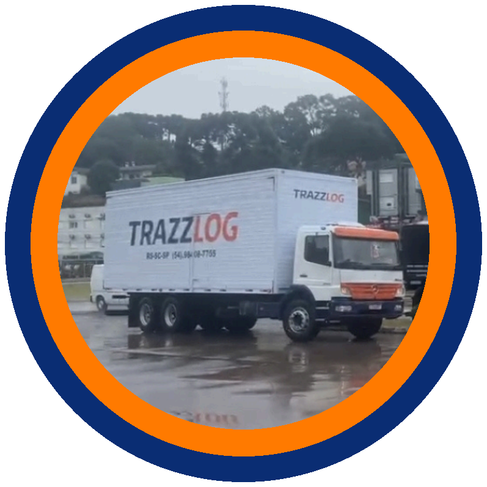

Carga fechada
Veículo dedicado, rota definida e acompanhamento direto para operações que não podem parar.
Solicitar atendimento ->Transporte rodoviário de cargas
Confiança que entrega resultados.
Cargas fechadas, transferências e coletas programadas com método, comunicação clara e controle do início ao fim.
Ver unidades e rotasNossos serviços
Soluções para empresas que dependem de prazo, previsibilidade e uma equipe que responde quando a operação exige decisão.
Veículo dedicado, rota definida e acompanhamento direto para operações que não podem parar.
Solicitar atendimento ->Fluxos programados entre filiais, centros de distribuição e fornecedores nos eixos RS, SC e SP.
Solicitar atendimento ->Janelas de coleta e entrega planejadas para reduzir urgência, ruído e retrabalho na operação.
Solicitar atendimento ->Comunicação objetiva entre cliente, origem e destino durante todo o transporte.
Solicitar atendimento ->
Por que a TRAZZLOG
Cada carga é tratada como parte do negócio do cliente. Antes da coleta, organizamos os dados, validamos a rota e alinhamos quem precisa saber o que está acontecendo.
Como funciona
Origem, destino, volumes, peso, cubagem e valor da nota fiscal.
Janela, perfil do veículo, restrições e melhor fluxo operacional.
Execução com acompanhamento e comunicação direta durante a viagem.
Fechamento da operação com confirmação e organização documental.
Nosso compromisso
Presença estratégica
Estrutura em Farroupilha e São Paulo, atendimento em Itajaí e operações de carga fechada para todo o Brasil.
Rua São Vicente, 794 - Cinquentenário - Farroupilha, RS - CEP 95174-274
+55 54 98161-7755Abrir no Google Maps ->Rua Terceiro Sargento João Soares de Faria, 245 - Parque Novo Mundo - São Paulo, SP - CEP 02179-020
+55 11 95407-0008Abrir no Google Maps ->Operações para a região de Itajaí e todo o estado de Santa Catarina.
+55 54 98161-7755Abrir no Google Maps ->Cotação de frete
Envie os dados principais da carga. A solicitação segue direto para o WhatsApp da matriz.